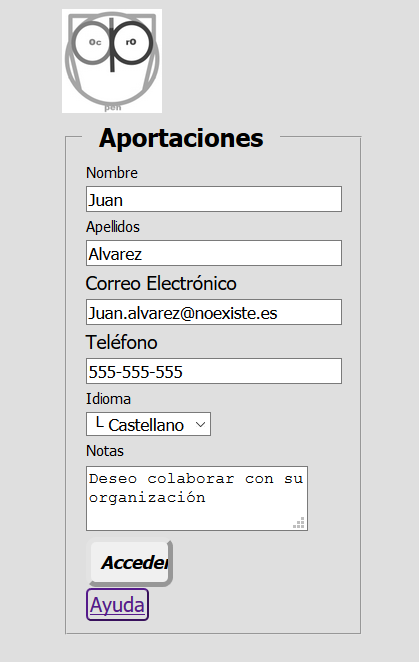

Contributions Module
Introduction
The OpenProdoc Contribution module allows to insert documentation to users not registered in OpenProdoc by means of totally configurable forms, similar to the OPAC search module that allows to search documents and folders to external users.
This can facilitate users external to the entity, or internal but not registered and who will access punctually, being able to provide documentation without the need for training or knowledge of OpenProdoc,
and avoids the management of users when it is necessary to deal with a large number of very specific collaborators, such as collaborators, partners or clients of an institution.
As in the case of the OPAC, security is critical, since confidential information could be accessed, documents can be manipulated or files that are harmful or too large can be iploaded.
To minimize risks, the contribution module has several forms of security and control that are detailed later.
With the function "Contribution Module" you can create forms like these:



How it works
The operation of the "Contribution Module", which only requires parameterization, is as follows:
- A folder should be chosen or created within OpenProdoc where the contributions of documents will be received and a type of folder should be created (chosen) to group those documents into "cases" with the sense that they want to give (donor, source, fund , ... ), with all the metadata that is considered necessary to define the "case".
- Within the total set of metadata, you can choose a subset of them that the external user can see, and enter if the system is defined as "open" (see the Security and Control section below), and some metadata that will be used to verify the identity of the external user if it is connected more than once or if the system is "closed".
- In addition, the document types to be accepted, the metadata to be entered for each type of document and the file formats must be chosen.
- When an external user connects, if the system is "open" it will present all metadata defined as "public" for the type of folder in the configuration.
The user will fill in all the mandatory metadata (among which will be the "verification" metadata) and when accepting a folder will be created (contained in the main folder of contributions), within which all the documents that will be uploaded will be stored. Authorized users within OpenProdoc can modify the metadata entered or modify metadata of the "internal" use folder, adding, in example, notes.
- Once the personal folder is accessed, the documents introduced up to that moment will be displayed and a new documentary type to be added can be chosen. The contribution module will present an input form with the metadata of the chosen documentary type, as well as a control to choose the document itself.
When accepting, the document will be incorporated into the folder, unless any restriction is breached, either by metadata (as mandatory, uniqueness, etc.) or by the document itself (extension not allowed, excessive size, ... ) in which case error information will be presented.
In another case, a confirmation screen will be presented and the content of the personal file will be presented again, with the documentation provided so far.
- When the user wants to end the session, they can leave the system and return to the login screen.
- If you want to provide documents in successive sessions you must enter the verification metadata so that the system can verify your identity and prevent a user from seeing the contents of a "case" that is not theirs.
This metadata fulfills the authentication function that is usually fulfilled by the combination of username and password, so that no other external user can enter the personal folder (authorized internal users through ACL) can always enter and perform the operations that the ACL allows them).
- If a system is closed, the difference is that only the verification metadata will be presented and that the folder must already be created. In other words, the staff responsible for OpenProdoc will have created the appropriate folders previously and sent the access / verification information to the users who will be connected.
- The "open" model can be applicable to a scenario in which a large number of unknown users will provide documentation, while the closed model would be applicable to a scenario where an institution works with a small number of collaborators or external partners, with which wants to share information but without creating internal users of OpenProdoc.
We must highlight the term "share", because in addition to uploading, all documents that are deposited in the folder case will be visible by the connected user. In other words, the institution can store documents that want the external user to see.
- In addition we must bear in mind that in that folder documents could be inserted with another ACL, so that they can not be seen by the external user but can be seen by internal staff.
- Once the information has been entered, an internal user with permissions on the folder can review the documentation provided, modifying metadata if necessary (for which another version should be created) or reclassifying the documents (exporting and importing again) if the classification was wrong.
Additionally, once the documentation is reviewed, it could be moved to another "public" folder from where it can be consulted through the OPAC or included in the corresponding document process.
Pages:
The contribution module manages 4 pages to perform its functions.
These pages, with a default structure already included in OpenProdoc, can be replaced by other pages (or even fragments of page or iframes if it is structured appropriately) indicating it in the parameters NumHtmlCont * and the rest of the related parameters.
The pages / steps that make up the contribution module are:
- Login: Entry form to request authentication data and file creation data if the system is open.
- List: Page that shows the data of the file and all the documents contained in it, and that allows to start the contribution of new documents.
- Upload of documents: Page that allows you to incorporate documents and fill in the metadata for the type of document chosen.
- Confirmation: Page showing the result (success or error) of the operation incorporating a document.
Parameterization:
You can create as many contribution files as you want. Each one will represent a "contribution area" with different characteristics and interface.
Although in principle they will be separated, CSS, internal user access and even the container folder could be shared.
As in the case of the OPAC, it will be invoked by means of a call, including as a parameter the identifier of the contribution file.
The file follows the usual standard of property files (tag + "=" + Value), admitting comments (lines that begin with the character '#').
The meaning of each label (which can not be repeated) is as follows:
- LoginFolderType: Type of folder that will be used to store and contain documents contributed by external users. A folder of this type will be created for each user.
It can contain the number and type of metadata considered necessary, including access metadata, information provided by the external user and "internal" metadata not visible to external users.
To avoid duplication, the type could include metadata with unique values. You could also define tasks associated with events to assign or change metadata values if desired. Ex LoginFolderType=Donation
- LoginFields: This entry contains the metadata of the type of folder that will be used to verify the identity of the user. If the system is closed, only those metadata will be presented and they will always be requested.
If it is open all those included in FieldsToInclude will be presented and after the first time (in which the folder is created) the following times will only be required. The number of verification metadata can be variable.
The minimum is one, but two, three, etc. can be included. according to the security and confidentiality of the system it requires it.
Keep in mind that these metadata, from the point of view of OpenProdoc are "normal" metadata and therefore are not ENCRYPTED, so it is not advisable to collect confidential information in them, as OpenProdoc users with access to these folders could see them. Ex: LoginFields=Mail|Phone
- FieldsToInclude: This entry contains all the metadata of the type of folder that will be allowed to view (always) or edit (if open) the user.
The login metadata should be included in the list. Additional metadata can be defined for internal use by OpenProdoc users (Notes, codes, dates, etc.). Example: FieldsToInclude=FirstName|LastName|Mail|Phone|Language
- DocTipesList: This parameter contains the list of document types that the user can provide.
Keep in mind that it only limits the types of documents to be contributed, but that in the case folder there may be other documents (introduced by an OpenProdoc internal user, for example, as an aid or to exchange documentation.) DocTipesList=PD_DOCS|Manual|Picture|Recordings
- Metadata list: For each document type included in DocTipesList an entry with the name: Fields_NameType can be specified, including a list of the metadata of that document type that the user will be requested.
Any metadata not included in the list will not be requested (although it may be presented if the Report used to show results contains it).
If an entry is not included for any of the types included in DocTipesList, ALL metadata of that type will be presented. The internal metadata is always excluded from the list: ACL, Doctype, LockedBy, MimeType, Name, ParentId, PDAuthor, PDDate, PDId, Purgedate, Reposit, Status, Version .ExFields_Picture=Title|Author|Keywords|DocDate
- OpenContrib: Indicates if the system is "open", that is, anyone can create folders or if it is closed and therefore the folders are already created and the external user that connects must know ALL the verification metadata to access the corresponding folder. Example: OpenContrib =1
- BaseFolder: Indicates the folder within which all folders of the type indicated in LoginFolderType will be created.
It must be a folder where the user used for the contribution has at least write and update permissions. Ex: BaseFolder=/Archive/UserDonations
- User: OpenProdoc user used internally to connect and create folders and documents.
It must be a user with limited permissions on folders (ideally only on BaseFolder) and role (only inserting folders and documents) as much as possible to minimize security risks. Ex User=guest1
- Pass: Password in "clear" of the selected user. Example: Pass=PassGuest1
- AllowedExt: List of allowed extensions to upload. Any other extension will be rejected, avoiding the upload of dangerous files. Ex.: AllowedExt=:doc|docx|xls|xlsx|ppt|pptx|txt|pdf|jpg|jpeg|tiff|tif|png|gif|odt
- MaxSize: Maximum size in bytes of the files to be uploaded, in order to avoid overload of Filesystem. Ex.: MaxSize=20000000
- ContribCSS: Identifier of the css style sheet to be used. It can be an identifier of a file hosted in OpenProdoc or an external url.
The predefined styles on the page are detailed in CSS Styles Contribution . Eg: ContribCSS=16697ec3694-3fe7288b86493159 or ContribCSS= ttp://www.portalCorporativo.com/css/estándar.css
- ContribLogo: Url of the logo of the contribution screens. It can be an absolute url or a reference to an image hosted in OpenProdoc. Eg: ContribLogo=http://www.portalCorporativo.com/imgs/Logo.jpeg or ContribLogo=SendDoc?Id=43436565-aefe43434
- Title: Title to show in the contributions screen. Eg: Title=Input Donations Documentation
- TitleList: Title to show on the list of documents contained in the folder. Eg: TitleList=Documents contributed so far
- DocsReportId: Identifier of the Report to be used to show documents contained in the folder. It should be a report with a fragment of the html page that can be "embedded". Example: DocsReportId=16654ff6af1-3f9b78099c0147a0
- UrlHelp: Help page that explains the process in a general and complete way. Eg: UrlHelp=http://www.portalCorporativo.com/aportaciones/ayuda.html
- OKMsg: Text to show when the document has been properly incorporated. Eg: OKMsg=Document Loaded Correctly
- NumHtmlContLog: Number of alternative login html pages. For each of the groups of agents that are listed, an identifier of an OpenProdoc document containing an html page must be defined. You must create as many pairs ListAgentLog [i], HtmlAgentLog [i] as indicated by this entry, starting at zero. Example: NumHtmlContLog=2
- ListAgentLog[i]: List of web agents for which the corresponding html of equal "subscript" must be returned. It is not necessary to include the full name of the agent, just a fragment of it, which may include name, version, etc. Eg: ListAgentLog0=Firefox
- HtmlAgentLog[i]: Identifier of the OpenProdoc document with the login html that must be returned for all the agents of the same subscript. Example: HtmlAgentLog0=57576abf4-6565dde4
- NumColAgentLog [i]: Indicates whether the table containing the metadata list of the access form has a column or two. If its value is 1, it contains a column. If it is zero or not informed, it will have two Ej .: NumColAgentLog0 = 1
- NumHtmlContList: Number of alternative html pages to present the list of documents. For each of the groups of agents that are listed, an identifier of an OpenProdoc document containing an html page must be defined. You must create as many pairs ListAgentList[i], HtmlAgentList[i] as indicated by this entry, starting at zero. Eg: NumHtmlContList=1
- ListAgentList[i]: List of web agents for which the corresponding html of equal "subscript" must be returned. It is not necessary to include the full name of the agent, just a fragment of it, which may include name, version, etc. Eg: ListAgentList0=Firefox|Edge
- HtmlAgentList [i]: Identifier of the OpenProdoc document with the document listing html to be returned for all the agents of the same subscript. Example:HtmlAgentList0=574343abf4-86976ddaa3
- NumColAgentList [i]: Indicates whether the table containing the metadata list of the folder listing form has a column or two. If its value is 1, it contains a column. If it is zero or not informed, it will have two Ej.: NumColAgentList0=1
- NumHtmlContAdd: Number of alternative html pages to incorporate documents. For each of the groups of agents that are listed, an identifier of an OpenProdoc document containing an html page must be defined. You must create as many pairs ListAgentAdd[i], HtmlAgentAdd[i] as indicated by this entry, starting at zero. Example: NumHtmlContAdd=3
- ListAgentAdd[i]: List of web agents for which the corresponding html of equal "subscript" must be returned. It is not necessary to include the full name of the agent, just a fragment of it, which may include name, version, etc. Example: ListAgentAdd1=Edge|Firefox|Opera
- HtmlAgentAdd[i]: Identifier of the OpenProdoc document with the document incorporation html that must be returned for all the agents of the same subscript. Example: HtmlAgentAdd0=123456abf4-4477238dda3
- NumColAgentAdd[i]: Indicates whether the table containing the metadata list of the Document Incorporation form has a column or two. If its value is 1, it contains a column. If it is zero or not informed, it will have two Ej.: NumColAgentAdd0=1
- NumHtmlContRes: Number of alternative html pages of results of the incorporation of documents. For each of the groups of agents that are listed, an identifier of an OpenProdoc document containing an html page must be defined. You must create as many pairs ListAgentRes[i],HtmlAgentRes[i] as indicated by this entry, starting at zero. Example: NumHtmlContAdd=3
- ListAgentRes[i]: List of web agents for which the corresponding html of equal "subscript" must be returned. It is not necessary to include the full name of the agent, just a fragment of it, which may include name, version, etc. Example: ListAgentRes0=Chrome|Opera
- HtmlAgentRes[i]: Identifier of the OpenProdoc document with the results html document incorporation that must be returned for all the agents of the same subscript. Example: HtmlAgentRes0=1885ffeebf4-4900462aaf3
If the browser User-Agent does not contain any of the indicated entries, then the internal templates included in OpenProdoc will be used. Alternative pages can be included only for any of the elements (login, list, ..), it is not necessary to do it for everyone.
The process of parameterizing a controibution module consists in creating a text file with the aforementioned content (the included example can be used as a base and modified), introducing the appropriate values to the specific OpenProdoc installation
Previously you must modify the OpenProdoc configuration file (Prodoc.properties or the name used) and add 2 lines:
User=User1
Pass=UserPass1
Where User1 and UserPass1 will be data of a user that has access to the different documents that configuration (Contrib and Contrib_CSS) that are described in this help.
It is recommended to be a user with a limited role and with a minimum of permissions, since you should only be able to access the configuration files of the Contribution in read mode.
As with any change in the configuration file (Prodoc.properties), the server must be restarted to be read again.
Next, the CSS must be created (or modified the example included) to adapt it to the style of the corresponding institution or company.
Then you must add the CSS to the OpenProdoc repository and write down the generated PdId.
This PdId is the one that should be referenced as parameter ContribCSS: of the configuration file of the contribution module.
Then that configuration file of the contribution module will be uploaded.
With the generated Id the OpenProdoc url should be invoked (that is: http://localhost: 8080/ProdocWeb2/ContribLogin?Id= the identifier of the new document uploaded, for example http://localhost:8080/ProdocWeb2/ContribLogin?Id=566b6464a654-9696e68d686 ).
OpenProdoc will present a page according to the parameters defined in that file, including style sheet, literals, document types, etc.
Since all the appearance is parameterizable, including document typologies, metadata, etc., and due it is oriented to sporadic users, it is reasonable to assume that a personalized help is necessary. For that there is a button that will open the html page whose url is indicated in the configuration. It could be an external page or an html document stored in OpenProdoc.
It should be noted that the configuration file, like any OpenProdoc document, can be edited and versioned, always being used the last published version to compose the contribution module. However, the update may take some time, since to improve performance, the configuration is not updated immediately because a cached copy is used.
Since the parameterization is based on one OpenProdoc document and the style on another, it is possible to have several settings simultaneously, which present different sets of documents, different interface language, different style or different user. Providing each user group with the appropriate url (which will only be differentiated in the Document Identifier), many different contribution modules can be offered with very little effort at the same time.
Example of contribution module configuration file:
#======= Document configuration =============================================
# Fields used for "login"/verifiation of identity
LoginFields=Correo|Telef
# Fields of the Foolder type to ask to be filled
FieldsToInclude=Nombre|Apellidos|Correo|Telef|Idioma
# Path of folder where folders will be created
BaseFolder=/Donaciones
# Document types allowed to be uploded
DocTipesList=PD_DOCS|Manual|Picture|Grabaciones
# Non included doc types show ALL fields
#Fields_PD_DOCS=
Fields_Manual=Title|DocDate
Fields_Picture=Title|Author|Keywords|DocDate
#Fields_Grabaciones=
#======= Security ==========================================================
# Open (1) or closed (0)system. When closed, Folder MUST be created and login information transmited to external user.
OpenContrib=0
# Folder type to use
LoginFolderType=Donaciones
# UserName and Password of the user that will do the actual insert in openprodoc of Folders and docs.
# It is recmmended to be a user with a limiteed rol (only insert of folders and docs) and permissions only in the Contribution folder
User=guest1
Pass=passguest1
# Allowed extensions to upload
AllowedExt=doc|docx|xls|xlsx|ppt|pptx|txt|pdf|jpg|jpeg|tiff|tif|png|gif|odt
# MaxSize upload (bytes)
MaxSize=20000000
#======= Interface =========================================================
# Openprodoc identifier of CSS or http url of CSS
ContribCSS=16697ec3694-3fe7288b86493159
# url of logo. Can be a "local" url using the format /SendDoc?Id=Identifier of doc
ContribLogo=img/LogoProdoc.jpg
# Title to be show in login
Title=Aportaciones
# Title to be show in content of folder
TitleList=Archivo personal
# Id of Report used for showing docs infolder
DocsReportId=16654ff6af1-3f9b78099c0147a0
# Url of help
UrlHelp=
#======= Alternative htmls ==================================================
# Alternative htmls depending on agent
#---------------------------------------------
# Num alternatives for login
NumHtmlContLog=1
# Agents for login
ListAgentLog0=Edge|Firefox
# html for each agent of login
HtmlAgentLog0=166a24cd914-3fee91e7fa2c96cc
#---------------------------------------------
# Num alternatives for Lista of docs
NumHtmlContList=1
# Agents for List
ListAgentList0=Chrome
# html for each agent of List
HtmlAgentList0=166a24d2fa1-3fe05747921f306c
#---------------------------------------------
# Num alternatives for adding docs
NumHtmlContAdd=1
# Agents for adding docs
ListAgentAdd0=Opera|Chrome
# html for each agent of adding docs
HtmlAgentAdd0=166a24d90f9-3fc08534bf7753e0
#---------------------------------------------
# Num alternatives for Results adding docs
NumHtmlContRes=1
# Agents for Results adding docs
ListAgentRes0=*
# html for each agent of Results adding docs
HtmlAgentRes0=166a24de462-3fc29665f8ea9ffc
#====================================================
Automation
To facilitate the work of internal users, it is advisable to define automatic tasks that notify changes and normalize entries.
For example, if the folder has metadata Name, Surname and DNI, it may be advisable to create a task associated with the "Insertion" event of type "modify metadata", normalizing the title of the folder with the "formula"="Title = DNI + "-" + Surname + ", " + Name (the exact syntax is not this, but it is used for clarity). This ensures that the nomenclature is homogeneous regardless of who enters the data.
You could also create a scheduled task that sends a report every night to a certain group with the data of all the created or updated folders (that is, they have new documents) in the day, so that you can automatically know what new documentation has been received and files have to be reviewed without needing to review them one by one.
Security and Control:
Since external access to a document manager by unauthenticated external users may involve risks of various kinds, various measures have been introduced to minimize the risk:
- The definition of a system as a closed system limits that only users who know information of the folders/ files can enter the system. Even if the system is open, once the file is created, only the user who knows the required access data can login in the system. For all purposes, the behavior is similar to the creation of users, who must know the user and password to enter, requiring in the case of the contribution module, the knowledge of 2 or more fields in the file (eg NIF and telephone, name and code). of file, ...).
- The user of the OpenProdoc application that is used internally to connect from the contribution module should be a user with the minimum permissions. Basically must have a role that only allows you to create documents (and create folders if the system is open, otherwise it is not necessary) and only have access to that folder. That will minimize the risk if somehow an external user could access with that internal user.
- To prevent the introduction of damaging harmful files, the list of allowed extensions can be parameterized. If a document that you try to upload does not have any of the extensions included in the list, it will be rejected. This will prevent the incorporation of executable programs (exe, com, dll, ...) or script (bat, sh, vbs, ..) that may contain viruses or harmful code.
- To avoid overflow of the system, the maximum size of each file to be uploaded can be limited, so that multiple Gigabyte files can not be incorporated to fill the file system and block operation.
- The possibility of creating different configurations (configuration files) allows you to create separate areas where different types or groups of users can collaborate. Even if data could be obtained to access a contribution area, there would be no access to another area.
If the documentation contained in the repository includes confidential or especially sensitive documentation, to increase security the recommendation would be to have TWO installations, one dedicated solely to collecting the documentation displayed in the DMZ or cloud or an area visible from the Internet and another deployed in an internal environment where it resides finally. The communication between both can be automated by means of automatic tasks in the input repository that export the documentation (as soon as it is entered or periodically) and other automatic tasks that are imported by the destination repository.
Help Index OpenProdoc